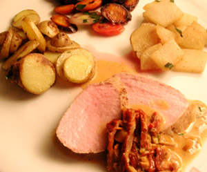

Kalbsfleisch mit Portweinrahmsauce mit getrockneten Tomaten
5 von 6das gewürzte (salz, pfeffer) filet kurz sehr heiss anbraten und bei 80 für ca. 1 3/4 std. niedergaren. Sauce: 100 g getrocknete tomaten in streifen geschnitten mit knoblauch und zwiebeln andünsten. mit 150 ml portwein ablöschen und zur hälfte einkochen lassen. 200 ml kalbsfond beigeben und wiederum auf etwa 150 ml einkochen. 3 dl vollrahm, salz und pfeffer dazugeben und mit einem schuss zitronensaft abschmecken. kurz vor dem servieren mit schnittlauch garnieren.
